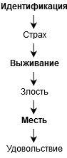
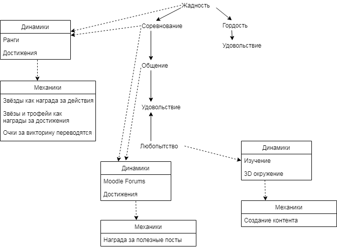
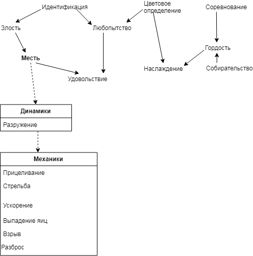
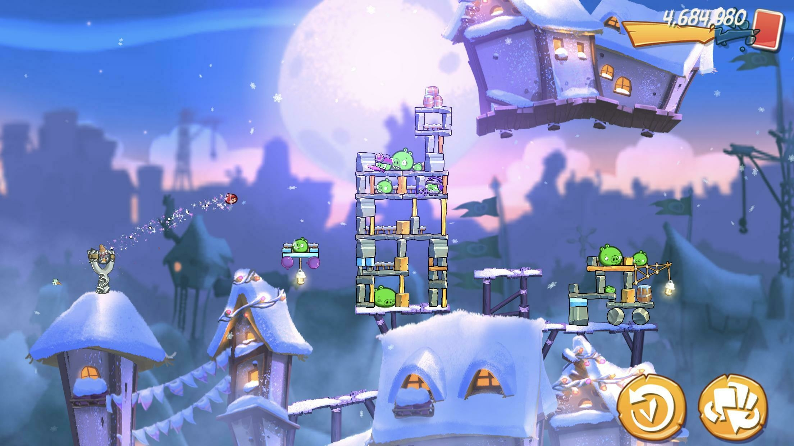

В книге On the Way to Fun: An Emotion‑Based Approach to Successful Game Design автор Роберто Диллон описывает метод '6-11', при помощи которого можно провести анализ дизайна видеоигры. Я хочу поподробнее о нём рассказать.
По словам автора, метод '6-11' полезен для создания эмоционально вовлекающего геймплея. Благодаря методу игровой процесс рассматривается через чувства и эмоции человека, а не через механики, динамики или эстетическую привлекательность игры.
Описание метода
Число «шесть» в названии означает шесть эмоций человека.
- Страх. Одна из самых распространённых эмоций, которые испытывают игроки.
- Злость. Мощная эмоция, которая является мотивирующим фактором для игры снова и снова.
- Наслаждение, или счастье. Эмоция, которая напрямую связана с получением «фана» и, собственно, удовольствия от игрового процесса.
- Гордость. Полученные достижения и первые места в турнирной таблице заставляют игроков гордиться собой. Как следствие, это мотивирует их улучшать свои показатели.
- Грусть. Эмоция вызывается от сопереживания и веры в происходящее на экране.
- Волнение. Достигается за счёт правильного давления на другие эмоции или инстинкты.
Вызвать эмоции у играющего можно не только игровым процессом, но и постановкой и игрой актёров - Death Stranding
Число «одиннадцать» означает базовые инстинкты человека.
- Выживание. Инстинкт срабатывает при возникновении опасности нашей жизни. Мозг умеет проецировать опасность, грозящую герою игры, на вашу личность. Как следствие, вы начинаете делать всё, чтобы ваш герой выжил в виртуальном мире..
- Самоидентификация. Применительно к играм, это означает отождествление своей личности с личностью героя.
- Сбор, или коллекционирование. Сильный инстинкт, отвечающий за увеличение добычу ресурсов и уменьшение чувства опасности.
- Жадность. За счёт жадности игрок не просто собирает необходимые ему ресурсы, но буквально «берёт всё, что плохо лежит».
- Защита, или забота. За счёт этого инстинкта игрок улучшает статус своего поселения, героя, добывает лучшие вещи и минимизирует потери.
- Агрессивность. Способность игрока вступить в открытый бой для защиты своих ценностей.
- Месть. Сильный мотиватор, позволяющий достигнуть справедливости в игровом мире.
- Соревнование. Инстинкт быть первым и лучшим.
- Общение. Получение информации, одобрения, связей в виртуальном мире.
- Исследование. Поиск скрытых или коротких путей, изучение виртуального мира, сравнение с представлениями о реальности.
- Цветовосприятие. Привлечение игроков за счёт продвинутой графики, полной спецэффектов и натуральных цветов.
Как использовать метод
Метод дополняет классический подход MDA — Mechanics, Dynamics, Aesthetics и используется на этапах проектирования игрового дизайна и тестирования.
Создавая и тестируя динамику (конечная последовательность механик, направленная на достижение внутриигровой цели) задайте вопросы:
- Какой эмоциональный путь проходит игрок, попавший в динамику?
- Приводит ли этот путь к получению удовольствия от игровых событий?
- Как улучшить эмоциональный путь игрока, чтобы он получил удовольствие?
Выписывайте прогнозируемые эмоции и инстинкты и смотрите, как они переходят друг к другу.
Например, при игре в Pac-Man игрок испытывает следующее изменение эмоций:

Эмоциональный путь игрока при игре в Pac-Man.
При запуске Pac-Man игрок не знает про правила, но видит игровое поле, Пэкмана, призраков и белые точки (идентификация).
При движении призраки стараются напасть на Пэкмана (страх).
Игрок избегает опасность, поедая точки (выживание).
Чем дольше игрок находится на игровом поле, тем сильнее призраки мешают ему успешно завершить игру (злость).
Когда Пэкман съедает фрукт, то он может сам атаковать призраков — в течение короткого времени они не представляют для него никакой опасности (месть и удовольствие).
Таким образом, у вас получилась последовательность из инстинктов и эмоций, которые испытывает игрок.
На этапе тестирования не забывайте опрашивать игроков, какие чувства они испытывают во время игры и соотносите их с ожидаемыми чувствами.
Примеры использования метода
Основной принцип метода гласит, что игровая механика должна доставлять чувство наслаждения играющему. Но на пути к этой эмоции игрок может проходить через другие, описанные выше.
Связи между механиками и эмоциями представляются в виде дерева:

Связи между механиками и эмоциями, которые они вызывают
Диаграмма описывает механики виртуального класса в обучающей программе. Как видно, основными мотивирующими факторами являются жадность и любопытство. Жадность приводит к соревновательному инстинкту, который трансформируется в коммуникацию и удовольствие от полученных знаний. Любопытство мотивирует пользователя изучать предмет и, как следствие, получать наслаждение от процесса.
На диаграмме видно, как эмоции и инстинкты поддерживаются динамиками и механиками. Динамика всегда связана с одним или несколькими чувствами, в то время как список механик всегда связан с одной динамикой.
Другой пример - Angry Birds:

Эмоции, вызываемые игрой в Angry Birds
Диаграмма описывает следующие события:
- Игрок определяет, кто есть хороший, а кто - плохой (идентификация, цветовое определение).
- Игроку интересно, почему птицы разозлились на свиней (любопытство, злость).
- Игрок замотивирован спасти птичек (месть).
- После спасения - завершения уровня, - наступает удовольствие.
- Каждый уровень предлагает собой испытание, соревнование, от чувства которого игрок тоже получает удовольствие.
- За победу на уровне игрок получает звёзды, что удовлетворяет его инстинкт собирательства.

Видно, что вокруг чувства мести строятся динамики и механики, но другие описанные чувства не имеют механик. И это верно, ведь они направлены на создание правильного эмоционального фона. Чувства могут быть вызваны не только при помощи геймплея, но и историей.